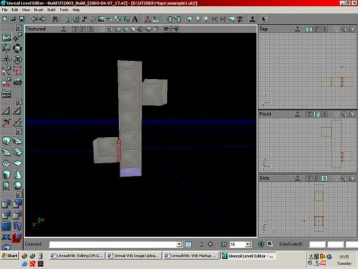
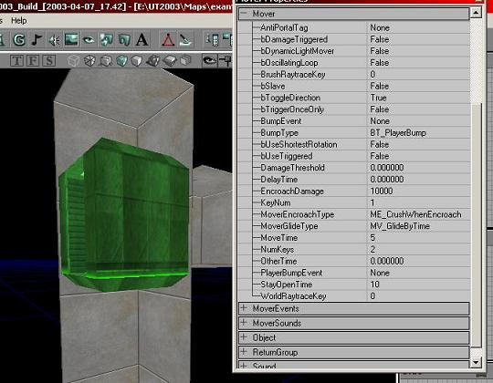
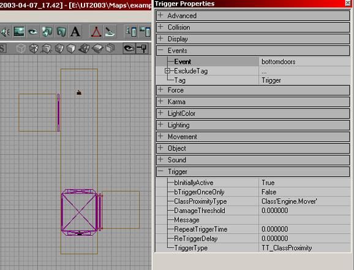

Making Multi-Story Elevators
There are several important things you should keep in mind:
- DM-Gridb2 style elevators cannot be used by bots, since they don't understand that the elevator CAN'T stop, they'll wait forever.
- These elevators can't move quickly, or players would be able to get inside the shaft, and that's not fun.
- I don't know if this can be reworked to function in UT, but with a little experience, it wouldn't be too difficult.
This is advanced stuff, so I'm expecting you know how to make a simple level out of subtract brushes, and convert basic brushes into static meshes. I will be using the static meshes I made for DM-Gridb2, but this can be done with any configuration of meshes with simple logic.
Step One:
Make something that basically looks like this:

See, not too difficult! Just don't play with fire. |
Step Two:
Now that we have our backwards Z thing, we need to add the elevator. Go find a nice elevator static mesh.
![[pdGrid2]](images/pdgrid2.jpeg) Now don't start Fappin' yet.. you still need to convert it to a Mover. |
Step Three
Now, you should know how to place a mover in the level; if you don't, go back to Mover. Place it at the bottom floor, then make the second keyframe at the top floor.

These settings can be changed, but for the sake of my sanity, these are the settings I'll be using. |
It's important to make the lift crush players on encroach, incase they get inside the shaft. It might be also useful to place volumes that destroy actors who fall into them at the bottom of the shaft.
Step Four
Let's make some doors. Take some door meshes and place them blocking the top and bottom, if you want to be really crafty, you could attach another set to the lift itself, but thats if you want to be super realistic.  Now, give the set of doors the tag "topdoors" and "bottomdoors" respectively.
Now, give the set of doors the tag "topdoors" and "bottomdoors" respectively.
![[pdGrid4]](images/pdgrid4.jpeg) That should say TRIGGERCONTROL not TRIGGERPOUND. |
Step Five
It's time to make the triggers for the doors. Place the top trigger just below where the top elevator will stop, and place the bottom trigger just above where the bottom of the elevator will stop. Set their events respectively and copy the settings I have in the screenshot.

Almost finished with the mechanics! |
Now you should have a CRAPPY but working elevator, now go back and do some fine tweaking.
Conclusion
If you were following this tutorial correctly, you shouldn't have the the slightest idea how this works, here's the rundown:
- The elevator is triggered by walking on to it and it moves to the second floor. This will trigger:
- The lift. It will leave the bottom.
- Bottom trigger, it closes the door.
- The lift makes it to the top, triggering:
- The top Trigger, opening the TOP doors.
- When it leaves it closes the doors.
Now that you understand the theory, you can move on to:
- Add a second set of doors attached to the lift.
- make a DM-gridb2 style elevator
- Use buttons to to trigger the lift
Oh, and I'm yet to tell you how to make this a DM-Gridb2 style elevator, its simple:
- make the mover loop
- set the keyframes as:
- bottom
- bottom
- top
- top
- and set the move time to something big... like 15 seconds.
Related Topics
Discussion
(Author): If you come up with any ideas that you could make with this system, add them below.
Mosquito: YARG!! finished this tut, with hickup no less!
Legal: Erm, I don't care about if you had hickups when you wrote this... I just want to know how. Well, not me, but whoever read it  [Cleaned up]
[Cleaned up]
dUc0N: Those are indeed some sexyfied doors y'have there
Timster: this rokz